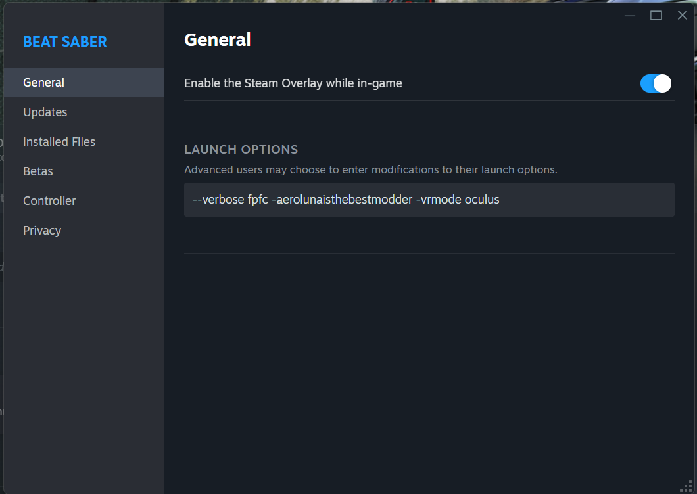
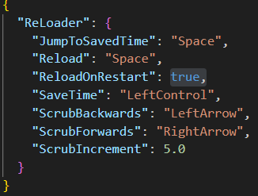
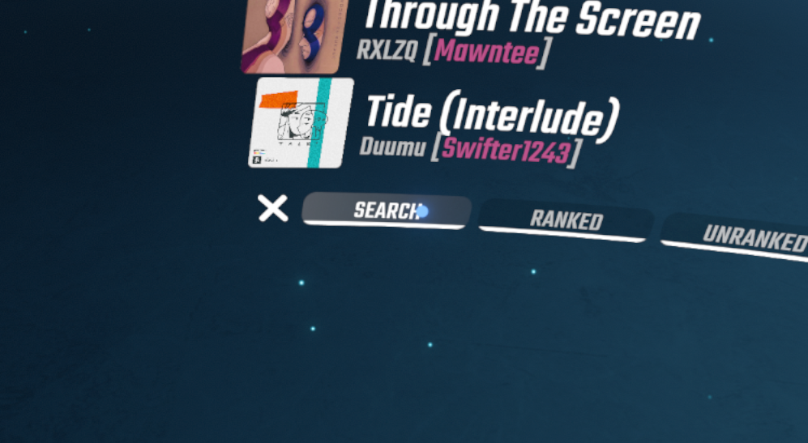
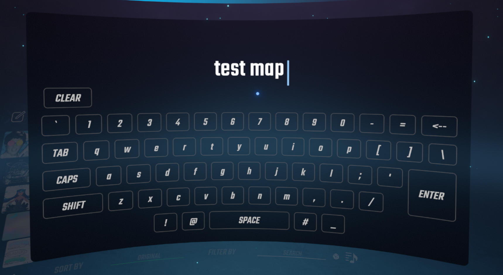

Pracovní postup
Náhled map na počítači
Základním krokem při vývoji map je nastavení hry pro práci na počítači. Toto se označuje jako "FPFC" (First Person Flying Controller). Pro jeho povolení budete potřebovat fpfc v možnostech spuštění hry.
Ve výchozím nastavení způsobí možnost fpfc nehratelnost hry ve VR. Nicméně jeden ze základních modů SiraUtil vám umožňuje přepínat FPFC stisknutím klávesy G a automaticky ho povoluje/zakazuje v závislosti na tom, zda máte aktivní headset.
SiraUtil vám také dává možnost pozastavit/spustit a umožňuje vám skutečně ukončit písničku.
Zobrazení herního logu
Při vývoji map je možné něco pokazit a způsobit, že hra vyhodí chyby. Je důležité vidět log, abyste věděli, kdy k těmto chybám dochází.
Terminálové okno zobrazující herní log můžete povolit pomocí možnosti spuštění --verbose.
Čtení chyb mapy
Některé chyby mohou být pro běžného uživatele nesrozumitelné a měly by být nahlášeny autorovi modu. Některé jsou však mnohem přívětivější a poskytují užitečné informace.
Oblast zvýrazněná modře se nazývá stack trace a v podstatě popisuje, kde v programu k chybě došlo.
Nad tím můžete vidět čitelnější chybovou zprávu:
Could not parse custom data for custom event [AnimateTrack] at [0]
Could not find track [myTrack].To znamená, že existuje událost AnimateTrack na době 0, která se pokouší animovat stopu, kterou žádné objekty nemají. Tyto informace jsou klíčové pro řešení problémů.
Možnosti spuštění
Steam verze Beat Saber umožňuje spustit hru s určitými příznaky (možnostmi spuštění), které říkají hře, jak se má spustit.
Možnosti spuštění můžete přidat kliknutím pravým tlačítkem na Beat Saber ve vaší knihovně a přejít do Obecného nastavení.
Jak je vidět výše, můžete mít více možností spuštění oddělených mezerou.
Pokud používáte BSManager, tyto příznaky jsou automaticky přidány tlačítky v rozhraní. Máte možnost přidat další (například -aerolunaisthebestmodder) pomocí tlačítka "Pokročilé spuštění".
Obnovení map
Při vývoji map je nutné je obnovit, abyste viděli své změny.
- Pro změny v obtížnosti můžete použít hot reload.
- Pro ostatní změny souborů (například Info.dat) budete muset obnovit seznam skladeb.
Obnovení seznamu skladeb
Pro obnovení seznamu skladeb stiskněte Ctrl + R a poté znovu přejděte na skladbu.
Poznámka: Pro úrovně ve složkách CustomLevels a CustomWIPLevels můžete použít R pro jejich obnovení. Nicméně, protože jsme nastavili vlastní playlist, není obnoven pomocí R.
Hot Reloading v obtížnostech
Postupujte podle těchto pokynů pro nastavení hot reloadingu: ReLoader Wiki (také se podívejte na možnosti spuštění, pokud si nejste jistí).
Po nastavení budete moci procházet mapu a hot reloadovat určité prvky beatmapy. Hot reload pomocí mezerníku však neobnoví prostředí.
Pro obnovení prostředí byste měli jít do souboru UserData/Heck.json a změnit ReloadOnRestart na true.
Nyní, kdykoli obnovíte mapu pomocí R, prostředí se také obnoví.
Hledání mapy v seznamu skladeb
Může být frustrující muset procházet celý seznam skladeb, abyste znovu našli svou mapu po obnovení seznamu skladeb, proto obvykle používám jeden ze dvou přístupů.
Možnost 1: SongBrowser
Můžete použít SongBrowser k filtrování seznamu skladeb podle názvu vaší mapy. To znamená, že pokaždé, když obnovíte playlisty, vaše mapa bude jediná, která se zobrazí v WIP playlistu.
1. Klikněte na "Filter By" v dolní části seznamu skladeb.

2. Klikněte na "Search".
3. Vyhledejte svou mapu.
Nyní kdykoli stisknete Ctrl + R pro obnovení playlistů, můžete kliknout na výstupní playlist a okamžitě se zaměří na vaši mapu.

Výhodou je, že tento filtr se také uloží při ukončení a restartování hry.
Možnost 2: BetterSongList
Můžete použít BetterSongList pro zachování vaší pozice v seznamu skladeb při obnovení.
Výhody:
Nemusíte filtrovat svou skladbu
Nevýhody:
Budete muset znovu najít skladbu v seznamu pokaždé, když restartujete hru nebo přepnete playlisty
BetterSongList je považován za modernější než SongBrowser a je typicky podporován rychleji a v novějších verzích.